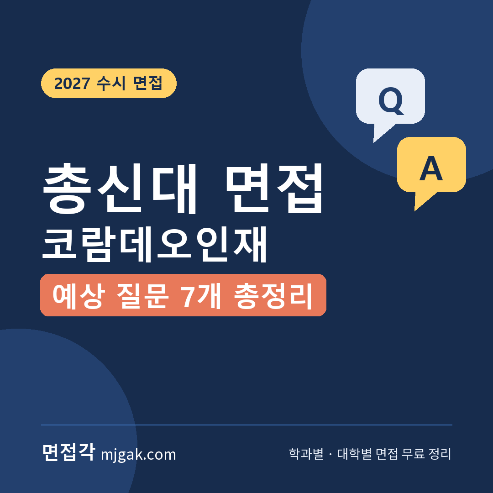
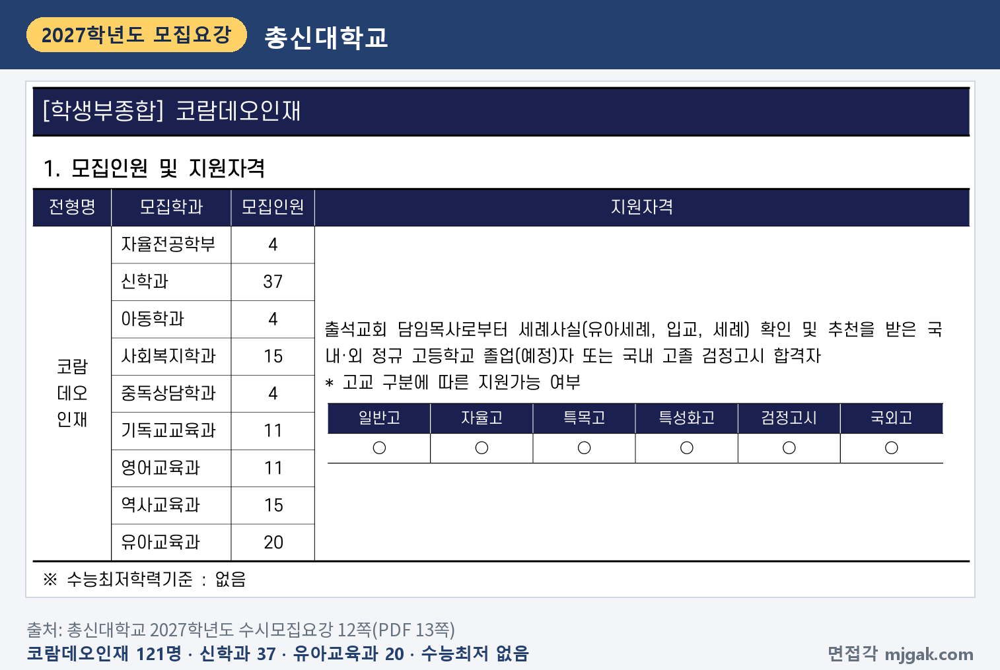
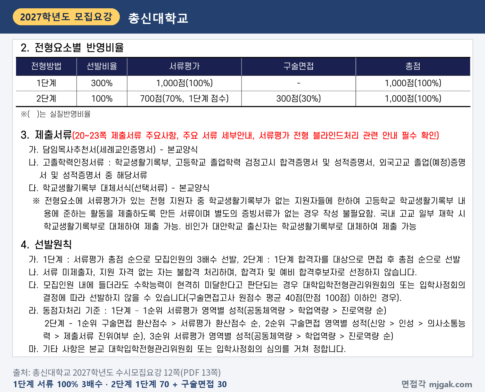
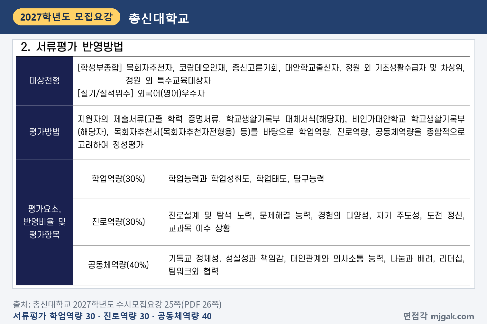
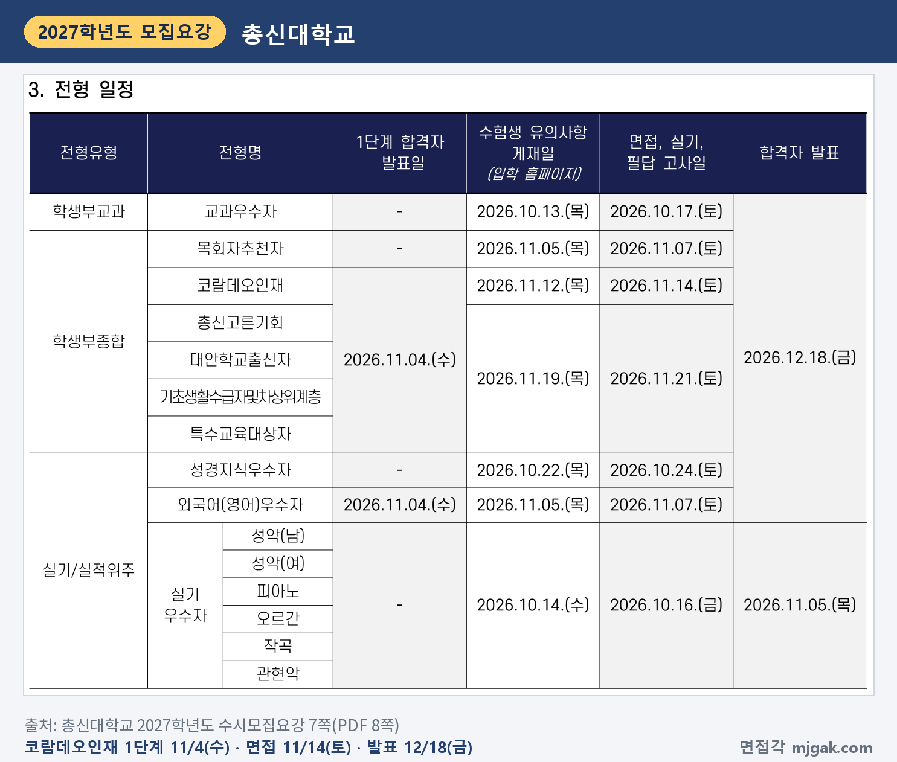
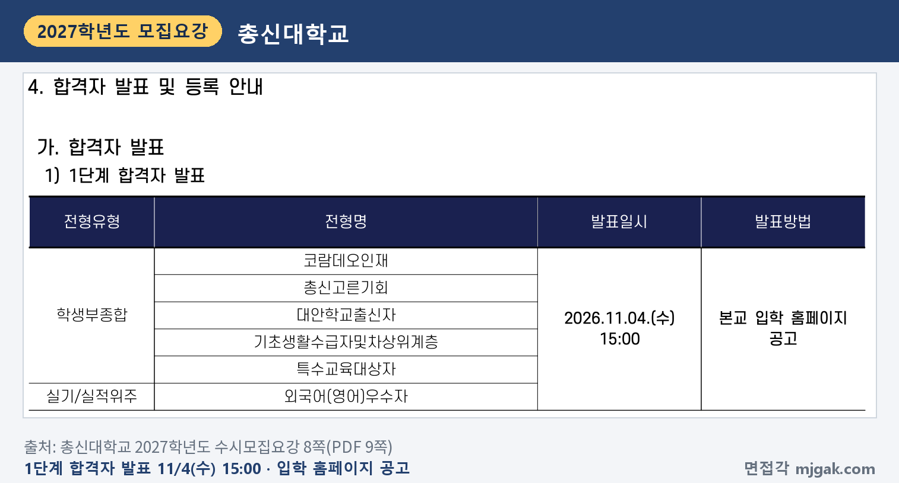
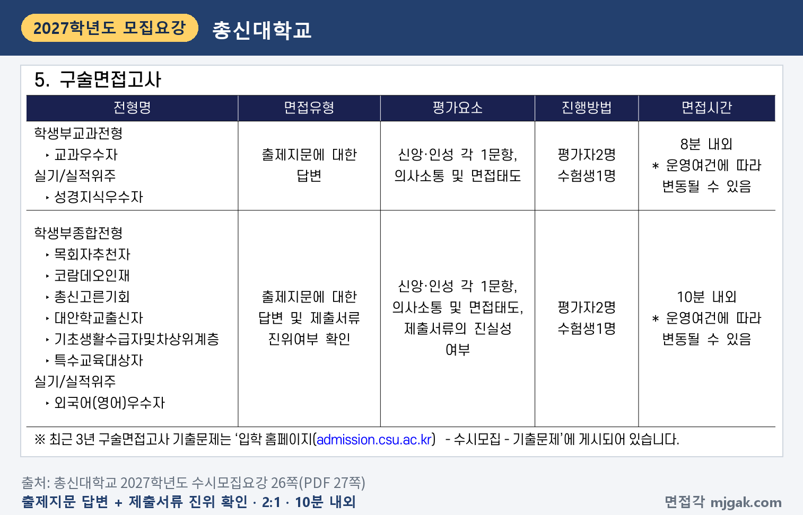
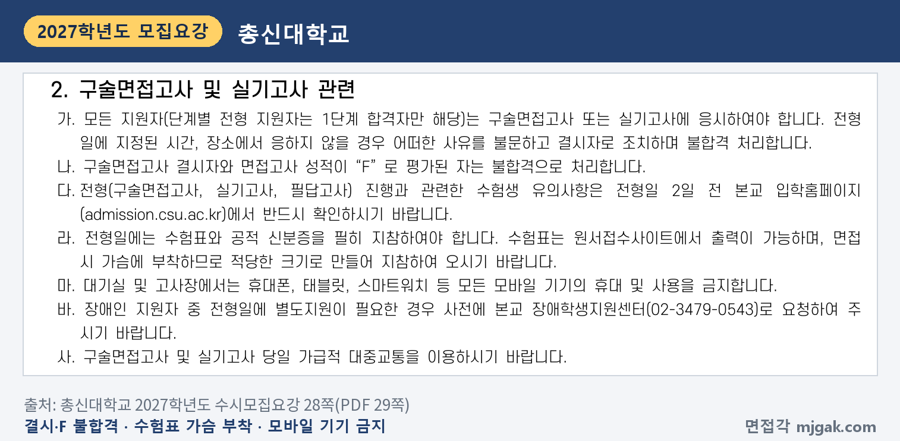
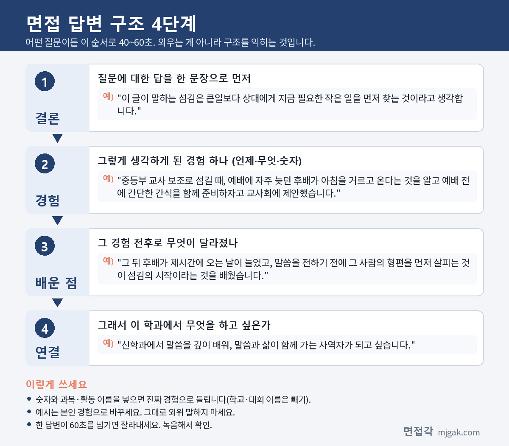
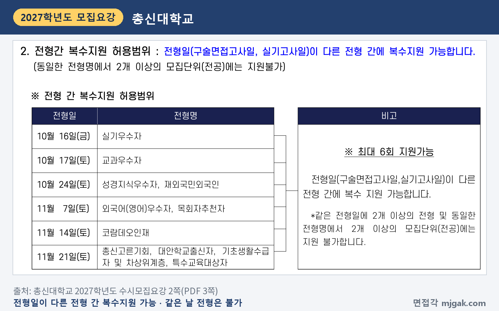

Ctrl+V (서식 유지됨)제목
본문 (이 영역 전체가 복사됩니다)
📷 여기에 이미지 넣기 — 썸네일 — thumb-chongshin.png (대표 이미지로 지정)
총신대 코람데오인재 면접에서 먼저 챙길 것은 면접이 제출서류의 진위 여부도 확인한다는 점이고, 코람데오인재 제출서류에는 학생부와 함께 담임목사추천서가 들어간다는 점입니다(12·26쪽). 면접은 출제지문을 읽고 신앙·인성 문항에 답하는 방식이고, 제출서류의 진위 여부도 함께 봅니다. 1단계 합격자 발표는 11월 4일(수) 15:00, 면접은 11월 14일(토)입니다. 수능(11월 19일) 5일 전입니다(이 글에서 계산한 값). 2단계는 1단계 성적 70%와 구술면접 30%를 합산하고, 면접은 평가자 2명이 수험생 1명을 10분 내외로 봅니다. 이 글은 총신대학교 2027학년도 수시모집요강을 바탕으로 코람데오인재의 전형 방법과 일정, 면접 방식, 예상 질문 7개, 준비 순서를 정리하고, 11월 7일 목회자추천자 등 나머지 면접 전형은 한 구역으로 묶었습니다. 코람데오인재 지원자와 총신대 학생부종합 지원자가 읽으시면 됩니다.
1. 코람데오인재, 2027학년도에는 어떻게 보나
총신대는 모든 전형에서 출석교회 담임목사의 추천을 받은 기독교 세례교인('유아세례'만 받은 사람 포함)만 지원할 수 있습니다(2쪽). 코람데오인재는 학생부종합전형으로 121명을 뽑아 총신대 수시에서 인원이 가장 많은 전형입니다. 신학과 37명, 유아교육과 20명, 사회복지학과·역사교육과 각 15명, 기독교교육과·영어교육과 각 11명, 자율전공학부·아동학과·중독상담학과 각 4명입니다(5·12쪽). 2026학년도 124명에서 3명 줄었습니다(3쪽). 국내·외 정규 고교 졸업(예정)자와 국내 고졸 검정고시 합격자가 지원할 수 있고, 수능최저학력기준은 없습니다(12쪽).
📷 여기에 이미지 넣기 — 캡처 1 — 총신대학교 2027학년도 수시모집요강 12쪽(PDF 13쪽): chongshin-2027-coramdeo-units.png
1단계는 서류평가 100%로 모집인원의 3배수를 뽑고, 2단계는 1단계 성적 700점(70%)과 구술면접 300점(30%)을 합산합니다(12쪽). 이 글에서 계산하면 1단계 합격 규모는 신학과 111명, 유아교육과 60명입니다(지원자가 그보다 적으면 줄어듭니다). 모집인원 안에 들더라도 구술면접고사 원점수 평균이 40점(만점 100점) 이하이면 선발하지 않을 수 있습니다(12쪽). 2단계 동점자는 구술면접 환산점수, 서류평가 환산점수 순으로 가리고, 그다음은 구술면접 영역별 성적(신앙, 인성, 의사소통능력, 제출서류 진위여부 순)입니다(12쪽).
📷 여기에 이미지 넣기 — 캡처 2 — 총신대학교 2027학년도 수시모집요강 12쪽(PDF 13쪽): chongshin-2027-coramdeo-method.png
서류평가는 제출서류를 바탕으로 학업역량 30%, 진로역량 30%, 공동체역량 40%를 종합해 정성평가합니다. 공동체역량의 평가항목은 기독교 정체성, 성실성과 책임감, 대인관계와 의사소통 능력, 나눔과 배려, 리더십, 팀워크와 협력입니다(25쪽). 2026학년도의 학업역량·인성 및 영성·전공적합성·발전가능성에서 2027학년도에 이 세 가지로 바뀌었습니다(4쪽). 학교폭력 조치사항은 4개 등급으로 나눠 서류평가의 공동체역량·진로역량, 구술면접의 인성 항목에서 참고해 정성평가합니다(27쪽).
📷 여기에 이미지 넣기 — 캡처 3 — 총신대학교 2027학년도 수시모집요강 25쪽(PDF 26쪽): chongshin-2027-docs-eval.png
2. 언제 보나: 1단계 발표 10일 뒤 면접, 수능보다 먼저
일정은 날짜순으로 이렇습니다(수능을 뺀 날짜는 7·8쪽).
- 11월 4일(수) 15:00: 1단계 합격자 발표, 입학 홈페이지 공고
- 11월 12일(목): 수험생 유의사항 입학 홈페이지 게재
- 11월 14일(토): 코람데오인재 구술면접
- 11월 19일(목): 수능
- 12월 18일(금) 15:00: 최초 합격자 발표
1단계 발표에서 면접까지는 10일입니다(이 글에서 계산한 값). 합격자 발표는 개별 통보하지 않으니 입학 홈페이지에서 직접 조회해야 합니다(8쪽).
📷 여기에 이미지 넣기 — 캡처 4 — 총신대학교 2027학년도 수시모집요강 7쪽(PDF 8쪽): chongshin-2027-schedule.png
📷 여기에 이미지 넣기 — 캡처 5 — 총신대학교 2027학년도 수시모집요강 8쪽(PDF 9쪽): chongshin-2027-first.png
3. 면접은 어떻게 보나
면접유형은 "출제지문에 대한 답변 및 제출서류 진위여부 확인"입니다. 평가요소는 신앙·인성 각 1문항, 의사소통 및 면접태도, 제출서류의 진실성 여부이고, 평가자 2명이 수험생 1명을 10분 내외로 평가합니다. 면접 시간은 운영 여건에 따라 바뀔 수 있습니다(26쪽). 영역별 배점과 지문의 길이, 준비 시간은 모집요강에 없습니다. 최근 3년 구술면접 기출문제는 입학 홈페이지 '수시모집 - 기출문제'에 있으니 먼저 읽어 보세요(26쪽).
📷 여기에 이미지 넣기 — 캡처 6 — 총신대학교 2027학년도 수시모집요강 26쪽(PDF 27쪽): chongshin-2027-interview.png
정해진 시간과 장소에서 면접을 보지 않으면 사유와 관계없이 결시로 불합격 처리하고, 면접 성적이 "F"로 평가된 사람도 불합격입니다. 수험표와 공적 신분증을 꼭 가져가야 하고, 수험표는 면접 때 가슴에 붙이니 적당한 크기로 출력합니다. 대기실과 고사장에서는 휴대폰, 태블릿, 스마트워치 등 모바일 기기를 지닐 수 없습니다(28쪽).
📷 여기에 이미지 넣기 — 캡처 7 — 총신대학교 2027학년도 수시모집요강 28쪽(PDF 29쪽): chongshin-2027-rules.png
면접 블라인드 방식이나 복장 규정은 모집요강에 따로 적혀 있지 않습니다.
4. 신앙·인성·제출서류에서 나올 예상 질문 7개와 답변법
총신대는 모집요강에 면접 질문 예시를 싣지 않았습니다. 아래 7개는 평가요소(신앙, 인성, 의사소통 및 면접태도, 제출서류의 진실성)와 담임목사추천서 양식으로 정리한 예상 질문입니다. 지문의 형식은 모집요강에 없어, 질문 1·3은 짧은 글을 읽고 답하는 형태로 가정했습니다. 예시 답변은 모집단위를 바꿔 쓴 가상의 예시이니 본인 경험으로 바꾸세요.
▶ 질문 1. (섬김에 관한 짧은 글을 읽고) 이 글이 말하는 섬김을 본인의 신앙생활과 연결해 말해 보세요. (신앙)
왜 묻나: 평가요소 '신앙' 1문항과 연결한 질문입니다. 지문 내용을 요약하는 데서 멈추지 말고 내 생각과 경험까지 이어야 합니다.
답변 구조: 지문에 대한 내 생각 한 문장 → 신앙생활의 장면 → 그때 배운 것 → 학과와 연결.
답변 예시 (신학과):
"이 글이 말하는 섬김은 큰일보다 상대에게 지금 필요한 작은 일을 먼저 찾는 것이라고 생각합니다. 중등부 교사 보조로 섬길 때, 예배에 자주 늦던 후배가 아침을 거르고 온다는 것을 알고 예배 전에 간단한 간식을 함께 준비하자고 교사회에 제안했습니다. 그 뒤 후배가 제시간에 오는 날이 늘었고, 말씀을 전하기 전에 그 사람의 형편을 먼저 살피는 것이 섬김의 시작이라는 것을 배웠습니다. 신학과에서 말씀을 깊이 배워, 말씀과 삶이 함께 가는 사역자가 되고 싶습니다."
주의: 지문을 처음부터 다시 읊지 마세요. 첫 문장에 내 생각을 말하고, 지문의 표현은 한 번만 짚습니다.
▶ 질문 2. 신앙을 갖게 된 계기와 지금의 신앙생활을 말해 보세요. (신앙)
왜 묻나: '신앙' 문항과 연결한 질문입니다. 참고로 목회자추천자전형용 추천서 양식은 예배 생활, 기도, 말씀 묵상, 봉사 및 섬김, 공동체 내 관계, 신앙 형성의 계기가 된 사건을 적게 합니다(39쪽).
답변 구조: 계기 한 문장 → 그 뒤 생긴 습관 → 지금의 봉사 → 학과와 연결.
답변 예시 (유아교육과):
"유아세례를 받고 교회에서 자랐지만, 신앙을 제 것으로 받아들인 것은 중학교 3학년 수련회 이후입니다. 그때부터 매일 아침 10분씩 말씀을 읽고 한 줄씩 적는 습관을 고등학교 3년 동안 이어 왔습니다. 지금은 영아부 예배에서 아이들 곁에 앉아 함께 찬양하는 봉사를 합니다. 유아교육과에서 아이들이 사랑받는 경험을 하도록 돕는 교사가 되고 싶습니다."
주의: "어릴 때부터 다녔습니다"로 끝내지 말고, 지금 하고 있는 일을 한 가지 넣으세요.
▶ 질문 3. (정직과 책임에 관한 짧은 상황 글을 읽고) 글 속 인물이라면 어떻게 하겠습니까? (인성)
왜 묻나: 평가요소 '인성' 1문항과 연결한 질문입니다. 선택 하나와 그 이유, 비슷한 경험을 함께 말하면 답이 분명해집니다.
답변 구조: 내 선택 한 문장 → 비슷했던 경험 → 그때 한 일과 결과 → 배운 점.
답변 예시 (사회복지학과):
"저라면 친구의 실수를 덮기보다 친구와 함께 바로잡겠습니다. 2학년 모둠 과제 때 한 친구가 자료를 출처 없이 그대로 옮겨 온 것을 발표 전날 알게 됐습니다. 친구에게 출처를 밝히고 우리 말로 다시 정리하자고 했고, 밤늦게까지 함께 고쳐 발표했습니다. 정직하게 바로잡는 것이 친구를 지키는 방법이라는 것을 배웠고, 사회복지학과에서도 대상자와의 신뢰를 먼저 생각하겠습니다."
주의: "상황에 따라 다르다"로 끝내지 마세요. 하나를 고르고 이유를 말한 뒤 아쉬운 점을 덧붙이는 것은 괜찮습니다.
📷 여기에 이미지 넣기 — 이미지 1 — 제미나이 생성: 늦가을 햇살이 드는 캠퍼스 라운지에서 가죽 표지 성경·나무 블록과 그림책·토기 모형·손뜨개 목도리 옆에서 답하는 여학생(실사) / "제미나이 프롬프트 1" · gem-chongshin-1.png
(AI로 만든 이미지로, 실제 캠퍼스와 다를 수 있습니다)
▶ 질문 4. 공동체에서 의견이 갈렸을 때 다른 사람을 배려해 결정한 경험이 있나요? (인성)
왜 묻나: '인성' 문항과 연결한 질문입니다. 서류평가 공동체역량의 '나눔과 배려', '팀워크와 협력'(25쪽)과도 이어집니다.
답변 구조: 상황과 갈린 의견 → 내가 떠올린 사람 → 낸 방법과 결과 → 생긴 습관.
답변 예시 (역사교육과):
"학급 현장체험 장소를 정할 때 산성 탐방과 박물관으로 의견이 갈렸습니다. 저는 다리를 다쳐 오래 걷기 힘든 친구를 떠올리고, 박물관을 본 뒤 가까운 옛 성곽 길을 짧게 걷는 안을 냈습니다. 양쪽 모두 동의했고, 그 친구도 끝까지 함께했습니다. 정할 때 가장 불편한 사람의 자리에서 먼저 생각하는 습관이 생겼고, 역사교육과에서 모든 학생이 참여하는 수업을 고민하고 싶습니다."
주의: 내 의견이 이긴 이야기보다, 누구를 위해 무엇을 바꿨는지를 넣으세요.
▶ 질문 5. 세례는 언제 받았고, 지금 출석하는 교회에서는 어떤 봉사를 하고 있나요? (제출서류의 진실성)
왜 묻나: 면접은 제출서류 진위여부도 확인합니다(26쪽). 담임목사추천서에는 세례 교회·세례일·집례자, 주일예배 출석 정도와 교회봉사 참여 정도가 적힙니다(36쪽).
답변 구조: 세례 시기와 교회 → 지금 맡은 봉사 → 그 봉사에서 알게 된 것 → 학과와 연결.
답변 예시 (기독교교육과):
"2021년 부활절에 지금 출석하는 교회에서 세례를 받았습니다. 고등부 찬양팀에서 건반을 맡아 주일마다 예배 30분 전에 와서 연습했고, 고3 여름방학에는 초등부 성경학교 보조 교사로 섬겼습니다. 성경학교에서 아이들이 이야기를 들을 때보다 직접 만들어 볼 때 더 오래 집중하는 것을 봤습니다. 기독교교육과에서 나이에 맞는 성경 교육 방법을 배우고 싶습니다."
주의: 추천서는 지원자가 볼 수 없게 담임목사님이 봉인해 주므로(20·35쪽) 적힌 내용을 알기 어렵습니다. 세례 받은 해와 교회, 지금 하는 봉사를 사실대로, 정확히 말하세요.
▶ 질문 6. 학생부의 ○○ 활동에서 본인이 직접 한 일은 무엇인가요? (제출서류의 진실성)
왜 묻나: 학생부도 제출서류입니다. 적힌 활동을 짚어 물을 때 내 역할을 내 말로 설명해야 합니다.
답변 구조: 활동과 내 역할 한 문장 → 막혔던 점 → 내가 바꾼 것과 결과 → 배운 점.
답변 예시 (영어교육과):
"영어 독서 토론 동아리에서 저는 토론 질문을 만드는 역할을 맡았습니다. 처음에는 줄거리를 묻는 질문만 만들어 토론이 10분도 안 돼 끝났습니다. 그래서 '내가 주인공이라면'처럼 생각을 묻는 질문을 하나씩 넣었더니, 영어로 말하기를 어려워하던 친구들도 한두 문장씩 의견을 냈습니다. 질문 하나가 말하기를 끌어낸다는 것을 배웠고, 영어교육과에서 학생이 입을 열게 하는 수업을 배우고 싶습니다."
주의: "저희 동아리는"으로 시작하면 내 역할이 흐려집니다. "저는 ○○을 맡았습니다"로 시작하세요.
▶ 질문 7. 방금 "배려를 배웠다"고 했는데, 그 뒤 실제로 바뀐 행동은 무엇인가요? (의사소통 및 면접태도)
왜 묻나: 평가요소 '의사소통 및 면접태도'와 연결했습니다. 앞 답변의 한 단어를 짚어 다시 묻는 질문도 예상할 수 있으니, 묻는 것에 첫 문장으로 답하세요.
답변 구조: 바뀐 행동 한 문장 → 계기 → 지금 하는 방식 → 학과와 연결.
답변 예시 (아동학과):
"바뀐 점은 도와주기 전에 먼저 묻게 됐다는 것입니다. 지역아동센터 학습 봉사에서 문제를 대신 풀어 주곤 했는데, 한 아이가 혼자 해 보고 싶다고 했습니다. 그 뒤로는 '어디까지 해 봤어?'라고 먼저 묻고 막힌 곳만 돕습니다. 아동학과에서 아이의 발달 단계에 맞게 돕는 방법을 배우고 싶습니다."
주의: 질문이 잘 이해되지 않으면 "○○을 여쭤보신 것이 맞을까요?"라고 확인해도 됩니다.
5. 답변은 이 4단계로 만드세요
어떤 질문이든 결론 → 경험 → 배운 점 → 연결 순서로 40~60초 안에 말하세요. 면접이 10분 내외이니 답 하나가 1분을 넘지 않게 연습합니다. 아래 도식은 질문 1을 4단계로 쪼갠 것입니다.
📷 여기에 이미지 넣기 — 도식 — structure-chongshin.png
6. 다른 면접 전형은 날짜가 다릅니다
목회자추천자(24명)는 1단계 없이 서류 70% + 구술면접 30%로 한 번에 뽑고, 면접은 11월 7일(토), 유의사항 게재는 11월 5일(목)입니다. 담임목사추천서와 목회자추천서를 모두 내고, 국외고 출신은 지원할 수 없습니다(7·11쪽). 외국어(영어)우수자(영어교육과 3명)는 1단계 공인어학성적 60% + 서류 40%로 4배수를 뽑고 면접도 11월 7일(토)입니다(7·18쪽). 총신고른기회(27명), 대안학교출신자(11명), 정원 외 기초생활수급자 및 차상위계층(16명)·특수교육대상자(20명)는 코람데오인재와 같은 1단계 3배수, 70% + 30%이고, 면접은 11월 21일(토)입니다(3·7쪽). 이 전형들의 면접 방식과 평가요소, 10분 내외 시간은 코람데오인재와 같습니다(26쪽). 면접일은 교과우수자가 10월 17일(토), 성경지식우수자가 10월 24일(토)로 이미 끝났고, 두 전형은 8분 내외, 원점수 평균 52점 이하 미선발 기준입니다(7·10·17·26쪽).
📷 여기에 이미지 넣기 — 캡처 8 — 총신대학교 2027학년도 수시모집요강 2쪽(PDF 3쪽): chongshin-2027-multi.png
7. 10월 31일(토)부터 면접 당일까지 준비 순서
10월 31일(토) ~ 11월 3일(화): 학생부를 처음부터 읽고 활동 세 개를 골라 "왜 시작했나, 내가 한 일, 막힌 점, 다음에 한 일"을 한 줄씩 적습니다. 세례 받은 해와 교회, 지금 교회에서 하는 봉사도 적어 둡니다. 질문 2·5의 초안을 만듭니다.
11월 4일(수) 15:00, 1단계 발표: 입학 홈페이지에서 직접 확인합니다(8쪽).
11월 5일(목) ~ 11일(수): 입학 홈페이지의 최근 3년 구술면접 기출문제를 읽습니다(26쪽). 짧은 글을 하나 읽고 1분 안에 내 생각을 말하는 연습을 신앙·인성 주제로 번갈아 합니다. 10분을 재며 모의 면접을 녹음하고, 60초를 넘는 답을 표시합니다.
11월 12일(목): 입학 홈페이지의 수험생 유의사항에서 시간과 장소를 확인하고, 수험표를 가슴에 붙일 크기로 출력합니다(7·28쪽).
11월 13일(금): 표시한 답을 줄이고 가는 길을 확인합니다. 새 답변은 만들지 않습니다.
11월 14일(토), 면접: 수험표와 공적 신분증을 챙기고, 가급적 대중교통을 이용합니다(28쪽). 시간 여유를 두고 출발하세요.
12월 18일(금) 15:00: 최초 합격자 발표. 합격했다면 12월 21일(월) ~ 23일(수) 문서 등록과 2027년 2월 10일(수) ~ 12일(금) 등록금 납부를 모두 해야 등록이 끝납니다(8·9쪽).
8. 총신대 코람데오인재 면접 자주 묻는 것들
Q. 목회자추천자에도 지원했는데 괜찮은가요?
A. 됩니다. 전형일이 다른 전형 간 복수지원이 가능합니다. 다만 같은 전형일의 전형 둘 이상, 한 전형의 모집단위 둘 이상에는 지원할 수 없어, 같은 11월 7일인 목회자추천자와 외국어(영어)우수자는 함께 지원할 수 없습니다(2쪽).
Q. 지문을 읽고 문제를 푸나요?
A. 면접유형은 '출제지문에 대한 답변'이고 신앙·인성 각 1문항입니다(26쪽). 지문의 길이와 준비 시간은 모집요강에 없으니 입학 홈페이지 기출문제로 형식을 확인하세요.
Q. 면접 복장은 어떻게 하나요?
A. 모집요강에 복장 규정은 없습니다. 수험표를 가슴에 붙이고, 공적 신분증을 가져갑니다(28쪽).
Q. 수능 최저가 있나요?
A. 없습니다(3·12쪽).
Q. 서류 점수가 높으면 면접은 부담이 적나요?
A. 모집인원 안에 들어도 구술면접 원점수 평균이 40점 이하이면 선발하지 않을 수 있고, 면접 성적이 "F"면 불합격입니다(12·28쪽). 면접을 따로 준비하세요.
9. 면접 전날 체크리스트
□ 짧은 글을 읽고 1분 안에 내 생각을 말할 수 있다
□ 신앙을 갖게 된 계기와 지금의 신앙생활을 60초 안에 말할 수 있다
□ 세례 받은 해와 교회, 지금 하는 봉사를 정확히 말할 수 있다
□ 학생부 활동 세 개를 "내가 한 일, 막힌 점, 다음에 한 일"로 말할 수 있다
□ 입학 홈페이지의 최근 3년 기출문제를 읽었다
□ 수험생 유의사항에서 시간과 장소를 확인했다
□ 수험표(가슴에 붙일 크기)와 공적 신분증을 챙겼다
10. 같은 시기에 면접 보는 대학
총신대와 같이 지원했다면 이어서 보세요.
▷ 강남대 학교생활우수자전형2 면접 총정리 (11월 7일~8일)
▷ 고려대 계열적합전형 면접 총정리 (11월 7일·8일)
11. 함께 보면 좋은 글
코람데오인재 면접은 10분 안에, 짧은 글에 대한 내 생각과 신앙생활, 학생부와 추천서에 적힌 경험을 사실 그대로 내 말로 설명하는 자리입니다.
※ 이 글의 내용은 총신대학교 2027학년도 수시모집요강에서 인용했습니다. 괄호 안 쪽수는 모집요강에 인쇄된 쪽수입니다. 예상 질문은 모집요강의 평가요소와 추천서 양식을 바탕으로 정리한 것이며 대학이 공개한 질문이 아닙니다. 수험생 유의사항과 기출문제는 총신대 입학 홈페이지를 꼭 확인하세요.
총신대를 포함한 76개 대학의 2027학년도 면접 정보와 71개 학과별 면접 질문·답변 예시, 대학이 공개한 실제 면접 기출을 무료로 정리한 사이트입니다. 회원가입 없이 바로 볼 수 있고, 질문을 무작위로 뽑아 60초 타이머로 연습하는 모의 면접도 있습니다.
태그 (#은 에디터가 자동으로 붙이므로 그대로 붙여 넣어도 됩니다)
넣을 이미지 목록 (docs/promo/img 폴더)










제미나이 프롬프트 1 — 늦가을 햇살이 드는 캠퍼스 라운지에서 가죽 표지 성경·나무 블록과 그림책·토기 모형·손뜨개 목도리 옆에서 답하는 여학생(실사) (4:3) — 제미나이에 그대로 붙여 넣어 이미지를 만드세요